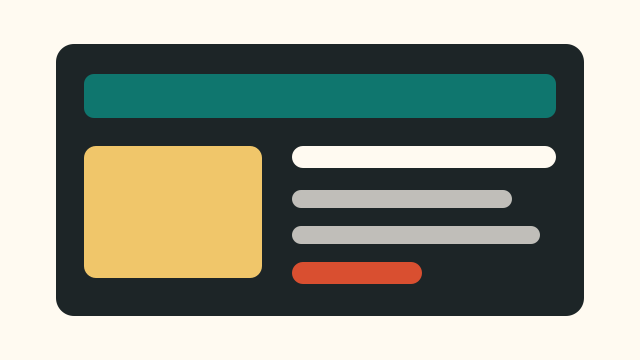
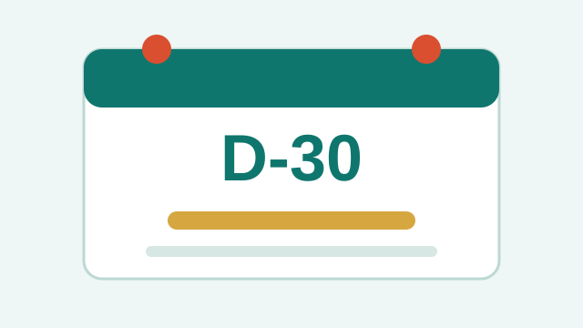
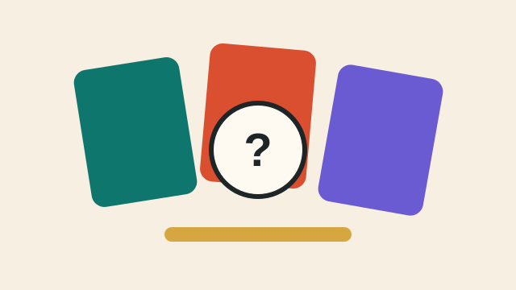
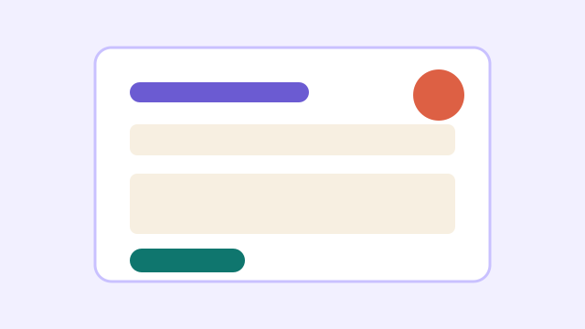

Portfolio
기본 템플릿에 있던 실습 페이지를 다듬고, 포트폴리오 카드와 필터 기능을 추가했습니다.

박예찬 소개, 기술 스택, 프로젝트 목록을 한 페이지 흐름으로 정리했습니다.

목표 날짜까지 남은 일수를 계산하고, 여러 일정을 브라우저에 저장합니다.

콤마나 줄바꿈으로 입력한 항목 중 하나를 뽑고 최근 결과를 기록합니다.

메시지 길이 표시, 필수값 검사, 임시 저장으로 기본 폼을 더 자연스럽게 만들었습니다.
해당하는 프로젝트가 없습니다.